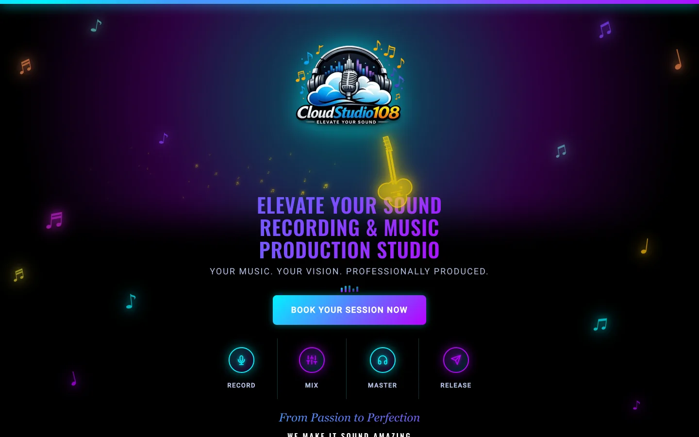
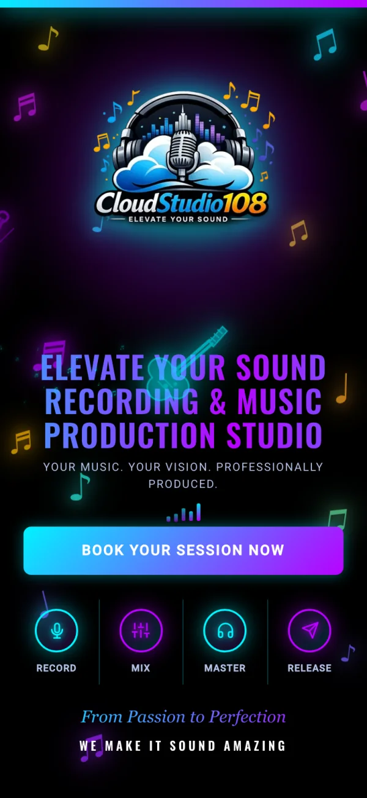
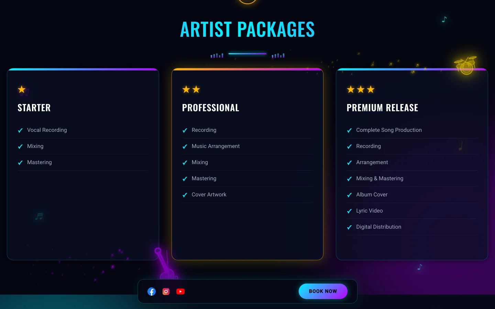

CloudStudio108
A marketing and booking site for a professional music production studio — heavy on photography and video, built to stay fast anyway.
Built under a private engagement. The source is not public, so this page covers the build and the decisions behind it rather than the code.



About the Project
CloudStudio108 is a recording studio offering sound recording, music production, mixing, and mastering, plus a music academy. The pitch is entirely visual and sonic — the rooms, the gear, the sound — so the site had to lead with media while still loading quickly for people finding it on mobile data.
I built it as a hand-written static site rather than reaching for a framework or a site builder. For a content set this size, a framework would have added a build step and a JavaScript payload without buying anything the studio needed.
What I Built
- Full marketing site: Vision and about sections, facilities, equipment, the creative space, and the music academy.
- Service and package pages: Artist packages and monthly creator tiers laid out for direct comparison, since pricing was the most common enquiry.
- Booking flow: A dedicated booking page so enquiries arrive structured instead of as open-ended messages.
- Media gallery: A large studio photography set plus embedded video and audio, so prospective clients can see and hear the room before they commit.
- Search groundwork: Sitemap, robots directives, and descriptive metadata for local discovery.
Notable Decisions
An all-WebP image pipeline. The gallery is the heaviest part of the site by far, so every photograph was converted to WebP and served directly — around fifty images, at a fraction of the original JPEG and PNG weight.
Lazy loading and reserved space. Below-the-fold media is lazy-loaded, and every image carries explicit width and height attributes so the browser reserves its space before the file arrives. On a page this image-dense, that is the difference between a stable layout and content jumping under the reader's thumb.
Static over a site builder. The studio was previously on a hosted page builder. Moving to plain HTML, CSS, and JavaScript removed the platform's script overhead and gave full control over layout and load order.
Edge hosting on Cloudflare Pages. With a custom domain behind Cloudflare, the media is served from the edge and cached close to visitors — the difference is most noticeable on the image-heavy pages.
Tech Stack
- Frontend: Hand-written HTML, CSS, and JavaScript — no framework, no build step
- Media: All-WebP image set, lazy loading, explicit dimensions, preloaded logo
- Hosting: Cloudflare Pages with a custom domain and Cloudflare DNS